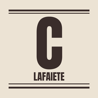
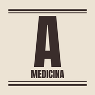

Banca
4 jornais✱Edição todo dia✱10/11/2026
Escolha o seu jornal
Toque num jornal para ler a edição de hoje.

Edição de 10 de novembroJornal de Cada DiaAs notícias do dia em linguagem simples: política, saúde e tecnologia.
›
Eleição decidida, agora o país volta ao trabalho

Edição de 10 de novembroO CarijóO jornal de Conselheiro Lafaiete: prefeitura, saúde, empregos e agenda da cidade.
›
Buracos nas ruas, UPA sem atestado e conta de luz: semana agitada em Lafaiete

Edição de 9 de novembroObservatório DiárioGeopolítica, guerras, energia, inteligência artificial e ciência.
›
Trump leva o Irã à mesa de Xi e Putin

Edição de 10 de novembroAnamneseMedicina para estudantes: estudos, ensaios clínicos e saúde pública.
›
O biomarcador caiu. O infarto, não.
"Cada página impressa aproximava o mundo"
Para ter a Banca como aplicativo no celular: no Android, abra no Chrome, toque nos três pontinhos e em "Instalar app" ou "Adicionar à tela inicial"; no iPhone, abra no Safari, toque em Compartilhar e em "Adicionar à Tela de Início". Depois da primeira visita, os jornais abrem até sem internet. Textos escritos com a ajuda do Claude, IA da Anthropic; não substituem orientação médica.